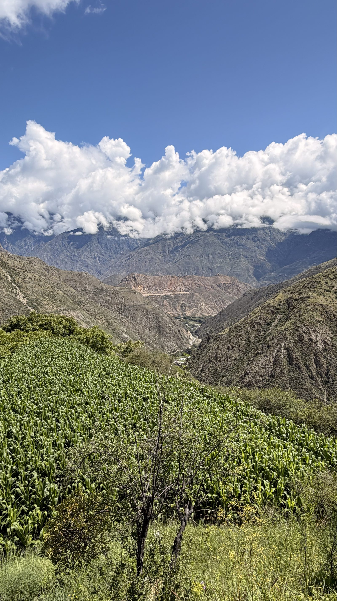
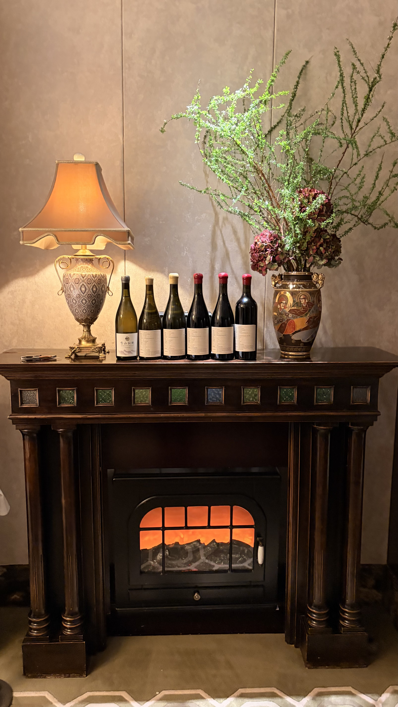

In the folds of the Hengduan Mountains, where three rivers run.
在横断山脉深处、三江并流的腹地，北纬二十八度的雪域高原上，朗境酒庄悄然生根。这里是被梅里雪山与白马雪山环抱的藏地秘境，山地绵延，森林覆盖，天地辽阔。朗境酒庄在这片被时间厚爱的土地上，开启属于自己的篇章。At the heart of the Hengduan Mountains, where three great rivers run in parallel, on a snow plateau set at the twenty-eighth parallel north, Chateau Langjing puts down quiet roots. Here we are held in the embrace of Meili Snow Mountain and Baima Snow Mountain — an open land of forest and ridge, vast and unhurried. A land that time itself has been kind to, and where we have come to write our first chapter.

Meili Snow Mountain, seen through the morning cloud梅里雪山 · 晨云之中的雪峰
Part One
Part · One
秘境之酿 A Vineyard at the Edge of Sky
A Vineyard at the Edge of Sky 秘境之酿
于天地辽阔之处，写下我们与时间的第一份答卷
To begin, where the land is wide and the sky is honest.
An Autumn Veil over the Hengduan · 横 云 掠 雪横 云 掠 雪 · An Autumn Veil over the Hengduan
The viticultural history of this land runs back almost a century, when French missionaries, in the village of Cizhong, planted the first vines — old trunks that still bear fruit to this day. A hundred years on, Chateau Langjing opens its first chapter on this same, time-tended land.
我们不与时间赛跑—— 我们与时间对话。We do not race with time. We listen to it.
我们不与时间赛跑—— 我们与时间对话。We do not race with time. We listen to it.
Chateau Langjing is rooted in the Deqin Meili appellation, our parcels arrayed along a vertical belt above two thousand metres. This is one of the very few corners of China where the vine need not be buried against the winter cold. Cool nights and large diurnal swings, paired with the intensity of the high-altitude light, allow the skins to ripen their phenolics fully — and the fruit to retain, always, a spine of clear mountain acidity.
The vineyard, drawn against the ridge依 山 而 立 的 葡 萄 园
The appellation sits in a low-latitude yet high-altitude cold-temperate monsoon climate — abundant light, measured rain. The South Asian monsoon meets the Himalayan cold here, and precipitation varies wildly between valleys, lending each cluster its own personality of sugar and acidity. A measured water stress keeps berries small, lifts the skin-to-juice ratio, and concentrates the flavour into something quietly fierce.
The soils of the Meili appellation are living fossils of geology. The Hengduan range is older than the Himalaya: hundreds of millions of years of collision have built a substrate of carbonate rocks, volcanic rocks and clastic debris. The soil runs warm with sand and gravel; its stones hold the day's heat and release it at night, cradling the roots in steady temperatures. Exchangeable calcium is exceptionally high, which preserves natural tartaric acidity in the fruit — a defined saline-mineral thread, a quietly architectural spine.
Across the appellation, each parcel — different in altitude, aspect and gradient — is matched, deliberately, to the variety that suits it best. Chardonnay and Pinot Noir above. Pinot Noir in the middle band. Merlot and Cabernet Sauvignon below. Each rooted where it belongs.
The population of Deqin is overwhelmingly Tibetan. The ancient Qiang first arrived in this country during the Warring States period; in the Tang, the Tibetan tribes of the Tubo kingdom migrated east from Tibet and merged with them — and the Tibetan people we know today are the fruit of that long union. Working from the four constraints of light, water, geological risk and access, generation after generation of these people have, by trial and error, settled the villages in the order we now see them — strung across the ridges like beads.
Per-capita farmland here is among the smallest in the country. We work in a close, hand-in-hand partnership with the local farmers — we provide the technology and the management; they provide the daily cultivation, the hand-picking and the hand-sorting. The slopes are too steep and the paths too narrow for any machine to enter. A meaningful share of fruit is culled by hand at the sorting table. And because the yaks the farmers keep need forage, they pull the weeds by hand throughout the season — a humble, sustainable partnership on both sides.
Our estate lies next to the Baima Snow Mountain National Nature Reserve, and conservation is the floor upon which everything else must stand. In our future planning, we have begun to explore an agriculture-and-hospitality model: adapting existing buildings into studios and lodges, developing yak-derived products — cheese, honey — alongside the wine, so that every visitor who comes to taste can also live, for a time, inside the changing seasons of this high country.
The annual production of Chateau Langjing is held, deliberately, to a very low number — the yield discipline of a small grower-craft house. That figure means: every bottle we release is the fruit of an absolute, uncompromising commitment. We do not scale; we refine.
Each variety is plotted with care along the altitude gradient: Cabernet Sauvignon in the lower and middle bands, Syrah higher, and at the very top — Pinot Noir and Chardonnay. Within this map, we have reserved a single-parcel Pinot Noir — a high-altitude monopole, conceived against the Burgundian ideal, intended as a rare and singular cuvée.

The hearthroom · six bottles in soft light静 室 安 瓶 · 炉 火 融 光
In the vineyard, we follow Burgundian grands crus as our standard — radically tighter planting density, so that the roots compete and the fruit concentrates. Our first vintage will be made from purchased and leased fruit: we have already secured good parcels of mature Chardonnay, and parcels of much older Chardonnay on long-term lease.
We are also exploring the path of biodynamic practice — a more natural, more sustainable way of husbandry — so that each vine may speak, in its fruit, the precise truth of the soil that grew it.
Chateau Langjing lives at the foot of Meili Snow Mountain and breathes with this Tibetan country. Every berry in our cellars has passed through the cold of the altitude, the burning of the UV, the slow whetting of the day-night swing, and the long gentleness of the plateau sun.
We believe the greatest wines were never made by human hand. They are handed, quietly, from the land — through the winemaker — back to the world.
Kawagebo at the last light · 日照金山日 照 金 山 · Kawagebo at the last light